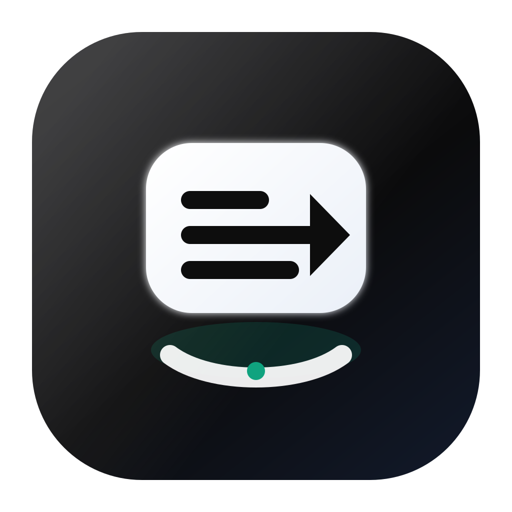

Ocean Mist · 已选定
Float Glass + outer ring + >
App 图标：外侧进度 + 玻璃球 + >。菜单栏 18pt：外侧进度 + 实心圆 + > 挖空 + 底弧。色板见 color-palettes.html。
 18pt 实尺寸
9:41
18pt 实尺寸
9:41
外环进度 ≈ 1/3
中球悬浮玻璃
中心>
关于官方 logo：把 OpenAI / Codex 官方标识直接当自家 App 图标或菜单栏图标，存在商标风险（容易被当成官方产品或授权附属）。
个人自用灰色地带也大；若以后分发/上架更不安全。推荐用原创的代码符号（如 >_）表达「Codex 意向」。
v1 · 保留对照
Code Chip
编码身份更强，但悬浮感弱；作为备选保留。

App Icon
若你更想要「纯 >」或「纯进度环」而不是两者叠在一起，也可以再收敛一版——18pt 菜单栏越简单越稳。